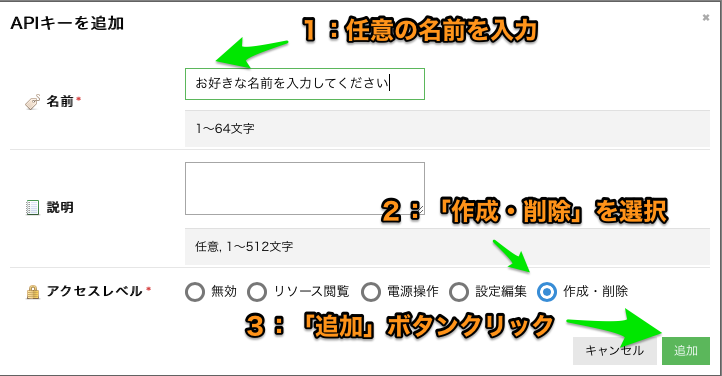
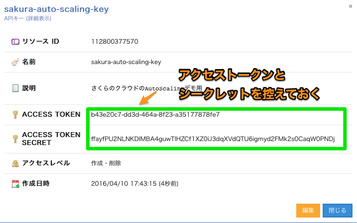

Installation / インストール
Terraformのセットアップ
- 1) こちらの公式サイトからzipファイルのダウンロードを行います。
- 2) 適当なディレクトリに展開します。
- 3) 2)のディレクトリにパスを通します。
以下はMacでの例です。展開先ディレクトリは~/terraformとして記載しています。
terraformインストール
# ~/terraformディレクトリ作成
$ mkdir -p ~/terraform ; cd ~/terraform
# ダウンロード
$ curl -sL https://releases.hashicorp.com/terraform/0.11.7/terraform_0.11.7_darwin_amd64.zip > terraform.zip
# 展開
$ unzip terraform.zip
# パスを通す
$ export PATH=$PATH:~/terraform/
動作確認
terraformコマンドを実行してみましょう。
以下のような表示がされればOKです。
terraform動作確認
$ terraform
usage: terraform [--version] [--help] <command> [<args>]
Available commands are:
apply Builds or changes infrastructure
destroy Destroy Terraform-managed infrastructure
get Download and install modules for the configuration
graph Create a visual graph of Terraform resources
init Initializes Terraform configuration from a module
output Read an output from a state file
plan Generate and show an execution plan
push Upload this Terraform module to Atlas to run
refresh Update local state file against real resources
remote Configure remote state storage
show Inspect Terraform state or plan
taint Manually mark a resource for recreation
validate Validates the Terraform files
version Prints the Terraform version
Terraform for さくらのクラウドのセットアップ
- 1) 以下のリンクから、プラットフォームに応じたzipファイルをダウンロードします
- Terraform for さくらのクラウド ダウンロードページ
- 2)
~/.terraform.d/plugins/配下に展開します
※ Windowsの場合は%APPDATA%/terraform.d/plugins/配下に展開します
Note:
Terraform for さくらのクラウドのバイナリーファイルはGitHub上のリリースページでも配布しています。
さくらのクラウドAPIキーの取得
さくらのクラウドのコントロールパネルにログインしAPIキーを発行します。
以下を参考に実施してください。APIキーを発行したら、ACCESS_TOKENとACCESS_TOKEN_SECRETを控えておきましょう。
さくらのクラウド コントロールパネルへのログイン

さくらのクラウド(IaaS)を選択

APIキー発行画面へ移動

APIキーの発行

発行されたAPIキーの確認

Dockerでの実行
TerraformとTerraform for さくらのクラウドを同梱したDockerイメージを用意しています。
Terraform for さくらのクラウド Dockerイメージ
以下のように実行します。
Dockerでの実行
$ docker run -it --rm \
-e SAKURACLOUD_ACCESS_TOKEN=[さくらのクラウド APIトークン] \
-e SAKURACLOUD_ACCESS_TOKEN_SECRET=[さくらのクラウド APIシークレット] \
-v $PWD:/workdir \
sacloud/terraform apply
docker-composeでの実行
# あらかじめ以下コマンドで必要な設定ファイルをダウンロード/編集しておく
# curl -LO https://github.com/sacloud/terraform-for-sakuracloud-docker/raw/master/docker-compose.yml
# curl -L https://github.com/sacloud/terraform-for-sakuracloud-docker/raw/master/env-sample > .env
$ docker-compose run --rm terraform apply
Homebrew(Linuxbrew)でのインストール
Homebrew(Linuxbrew)をご利用中の場合、以下のコマンドでTerraform for さくらのクラウドをインストール可能です。
brew install sacloud/terraform-provider-sakuracloud/terraform-provider-sakuracloud
注: brewコマンドでのインストール後、プラグインの有効化のために画面の指示に従って~/.terraform.d/plugins配下にシンボリックリンクを作成してください。
# シンボリックリンク作成の例
ln -s /usr/local/opt/terraform-provider-sakuracloud/bin/terraform-provider-sakuracloud_v1.0.5_x4 ~/.terraform.d/plugins/terraform-provider-sakuracloud_v1.0.5_x4